Edinburgh USA
Brooklyn Park, MNBig Scottish-manor clubhouse in brown stone with steep slate roofs, stone gable fronts (one with a clock) and an umbrella terrace.
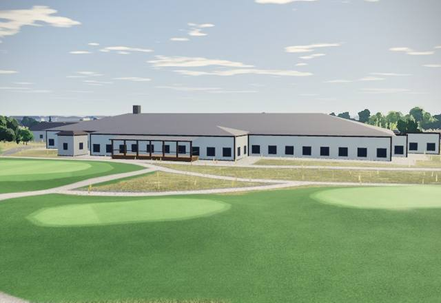
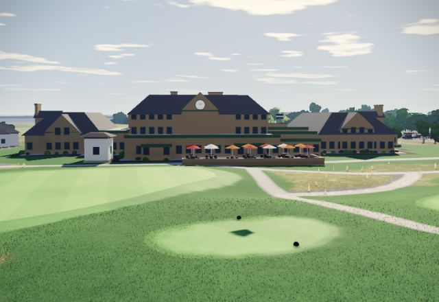
October 22, 2026. Every clubhouse was checked against photos of the real building, and 42 of them got a new look: the right number of storeys, roof shape and colours, materials, gables, towers and patios. Here's each one before and after, seen from the course.
Big Scottish-manor clubhouse in brown stone with steep slate roofs, stone gable fronts (one with a clock) and an umbrella terrace.


White lap-sided Lowcountry plantation house. A wide, low white gable with ribbon windows and a round oculus faces the course above a screened wraparound veranda with white columns and an arched centre entry. It all sits on a raised, ivy-covered brick base with arched openings and a central stair, under a brown-grey shingle roof with pale stucco chimneys.
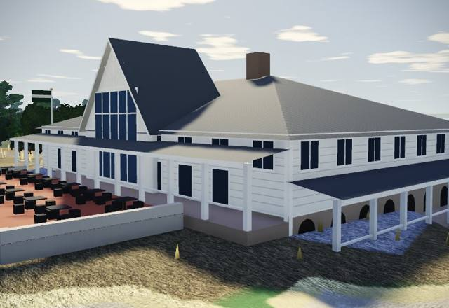
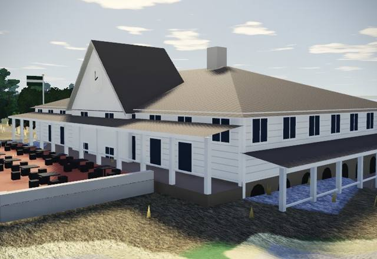
A one-storey red-brick clubhouse on a hilltop with a grey-brown shingle hip roof, white cupola and brick chimneys. Entry side: a white pedimented entry gable over a small white-columned porch. Course side: white-columned veranda round the building with a white centre gable, opening onto a big curved terrace raised on a tan block retaining wall with railing.
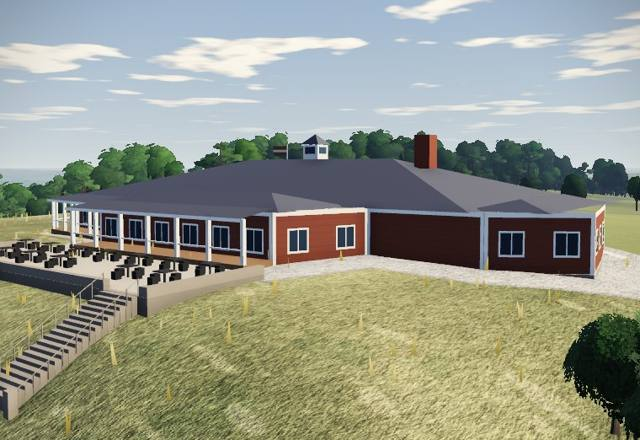
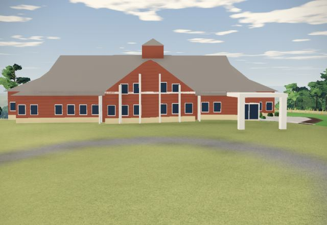
A long, low plantation-style clubhouse on a hilltop: cream-white siding, grey-brown shingle hip roof, a tall white cupola in the middle, three front gables (gable-ended wings at each end and a larger centre gable) above a white-columned veranda running the full front, and light-coloured chimneys. No red brick is visible.
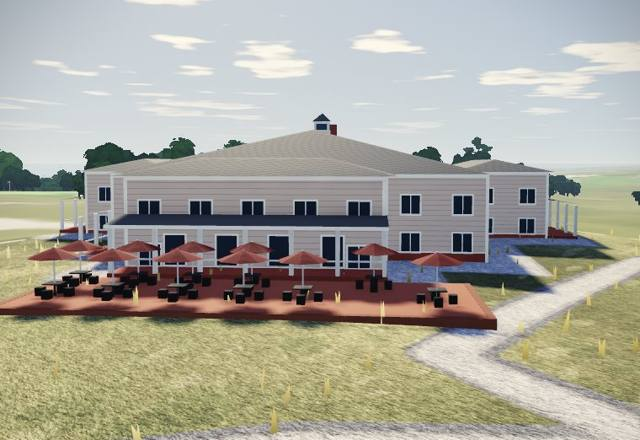
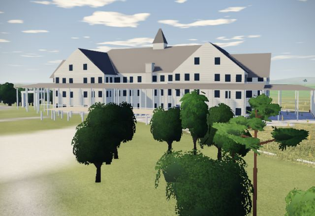
A one-storey clubhouse clad in weathered grey cedar shingles under a very tall, steep, hipped synthetic-shake roof (roof much taller than the walls), with lower hipped side wings. A long shed-roofed covered walk on grey posts runs along the walls. Windows are white-framed, with one wide white shed dormer.
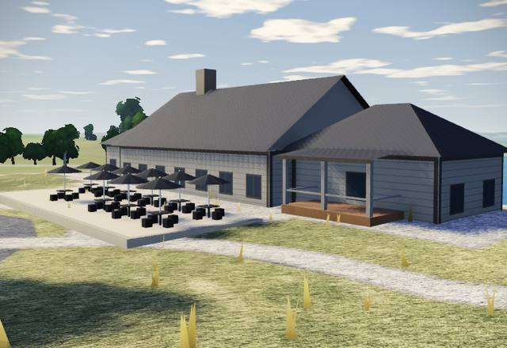
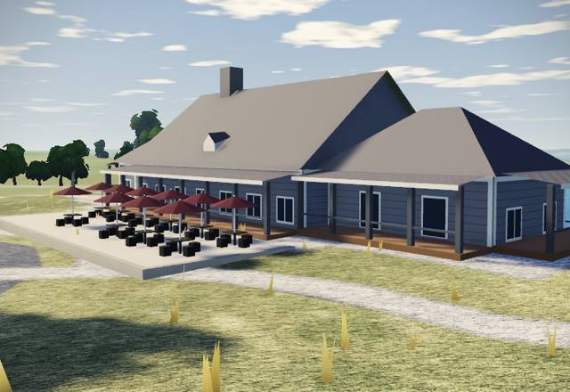
A one-storey lodge-style clubhouse under a big dark green-grey shingle hip roof with a fieldstone chimney. A central cedar-shingled cross gable has an arched glass window and an exposed timber truss, with a small shingled gable dormer on each side. The walls are mostly windows between natural timber posts under a deep eave that forms a covered walk all round. Stone-paved patio with green umbrellas.
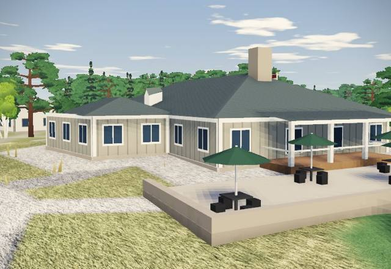
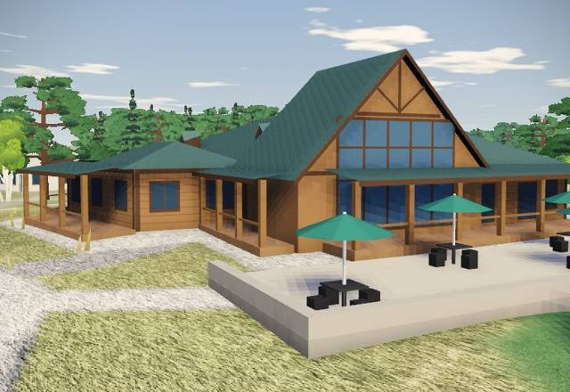
A one-storey cream/butter-tan stucco clubhouse with dark charcoal-bronze standing-seam metal hip roofs, stacked-stone pilasters and pier bases, and a square lantern cupola on the ridge. The entry has a big gabled porte-cochère on cream columns with stone bases. The course side has two broad, low-pitched gables with large windows, and a brick terrace under a cream pergola with a black iron railing. No umbrellas.
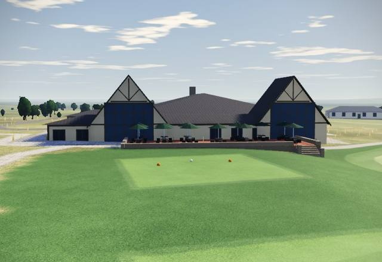
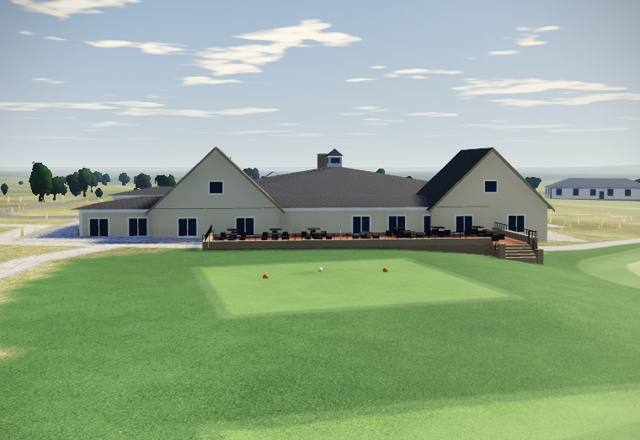
A large one-storey lodge with dark brown wood walls under a big hipped teal-green shingle roof. It has wide shed dormers, a light stone chimney, and a steep central entry gable over a gabled porch on tan stone piers.
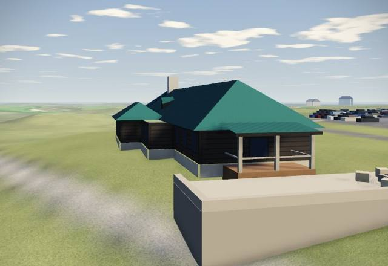
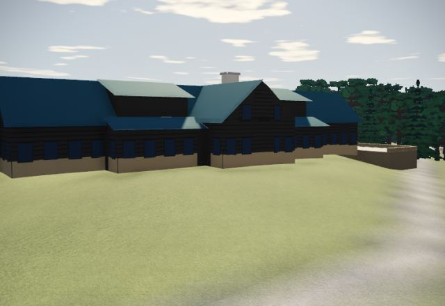
A single-storey, flat-roofed Southwest clubhouse in pinkish-tan stucco with stacked-stone pilasters and white membrane roofs behind parapets. The course side has a long dining patio under a rust-brown sloped roof on log posts, with a black wire railing, raised on a curved salmon stucco retaining wall. The entry has timber barrel-vault canopies on log posts and a black iron-fenced patio.
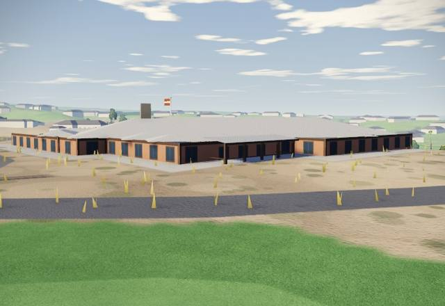
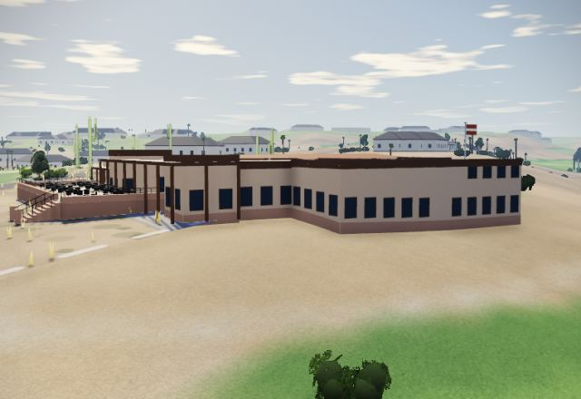
A farmhouse-style clubhouse in dark charcoal lap siding with cream window trim and a galvanised silver standing-seam metal roof. The main block has three gabled dormers (dark, with white windows) and a stone chimney. A full-width glazed sunroom porch with cream frames runs across the course side, with stone steps and stacked-stone patio walls, lower side wings, burgundy umbrellas and a row of Adirondack chairs on the lawn.
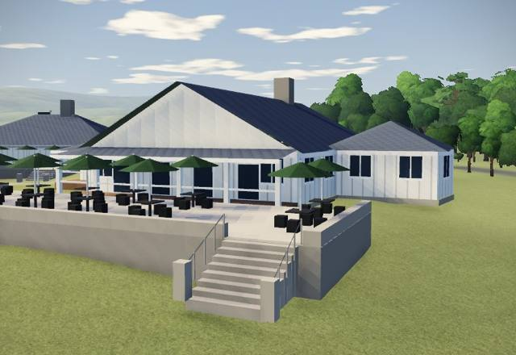
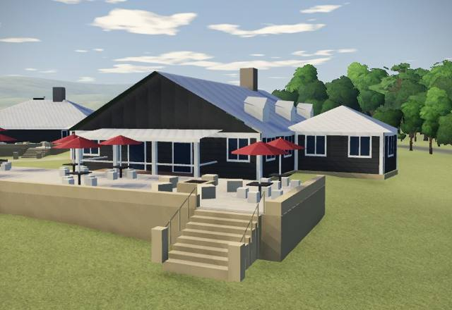
Same RTJ-Trail template as Oxmoor: a red-brick ground storey with big dark arched openings and a central stair, an upper storey of cool grey siding wrapped by a deep white-columned veranda (dining tables, no umbrellas), a large central cross gable with a round rosette window flanked by arched windows, a small cupola and a grey-brown shingle roof.
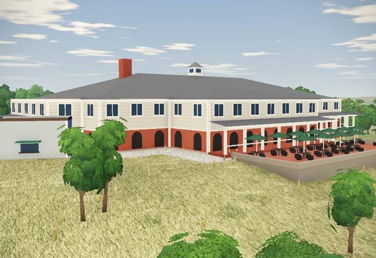
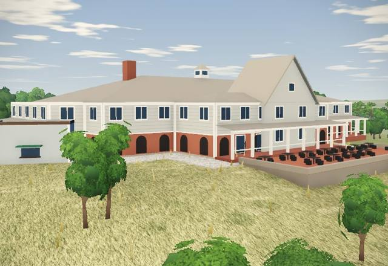
White two-storey Greek Revival mansion with a full-height columned portico and pediment, black shutters, a dark charcoal hip roof and white chimneys, flanked by lower one-storey wings. Brick walks and drive.
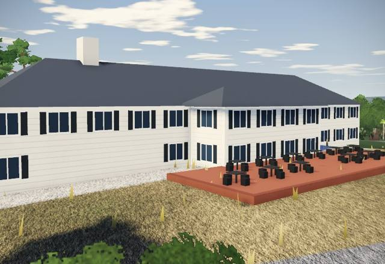
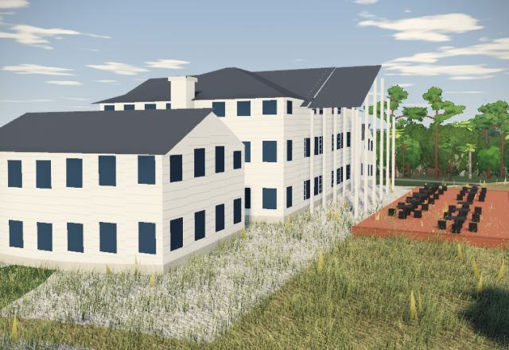
A large Tudor clubhouse with cream stucco and dark brown half-timbering. Steep brown-shingle gables are filled with tall multi-pane glass, and the middle gable has a clock in its peak. It all sits on a red-brown brick arcade ground storey (walk-out) with dark openings. A long glazed wing runs off to one side, the chimney is white-painted, and brick-walled terraces have cream umbrellas.
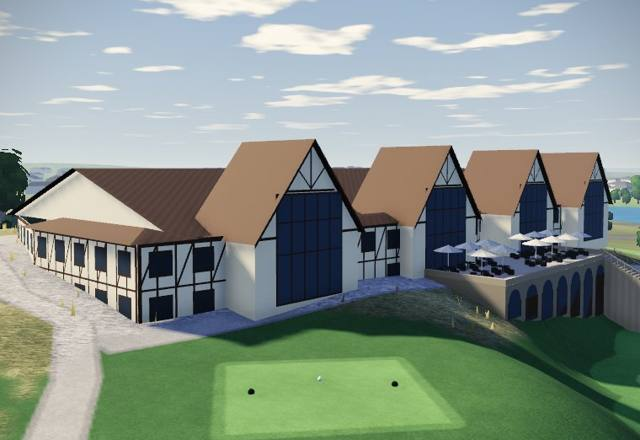
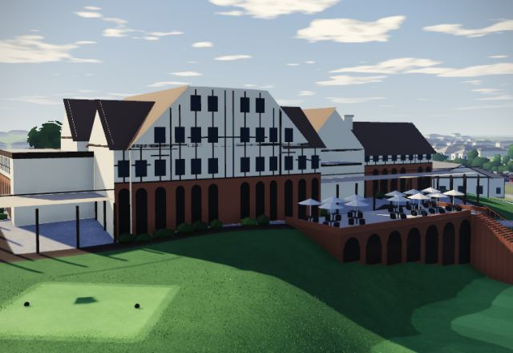
A low-pitched hip-roofed walkout clubhouse in warm beige/khaki stucco with a grey-brown shingle roof. The course side is two storeys: a broad low centre gable over a covered upper-level dining veranda (cream columns, dark railing) standing on an arcade of arched openings; the single-storey entry side has a hipped porte-cochère on paired cream columns.
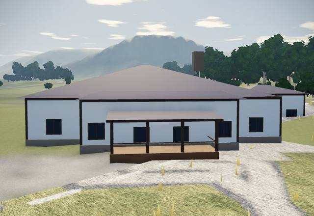
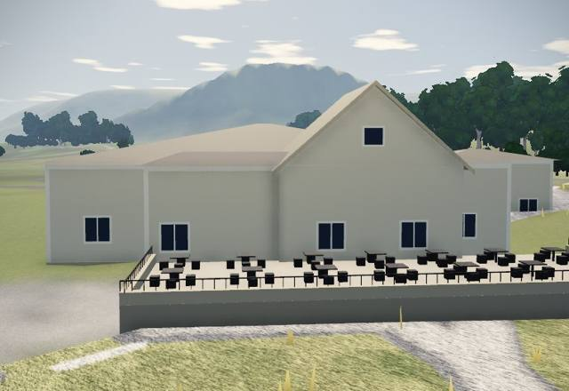
The game's footprint is the long, curved three-storey Lodge at Giants Ridge; its shape and porte-cochère entry match the old aerial 01 and both renders. The Lodge is warm brown lap siding with golden-tan window trim and corner boards, and a dark green-grey shingle roof with gable ends. A row of gabled dormers/peaks runs along the roof, a gabled porte-cochère wing faces the lot, and there's a timber deck with railing. The Legend's golf shop is a one-storey annex at its end in the same palette: brown siding, cream/tan trim, a timbered entry gable and a green door under a green shingle roof.
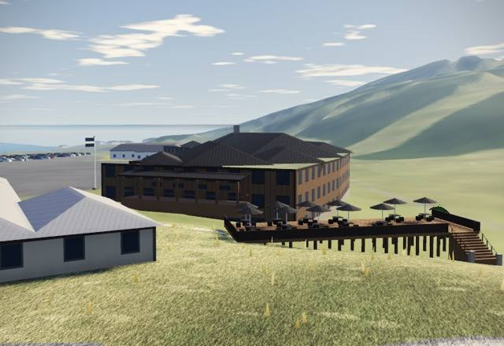
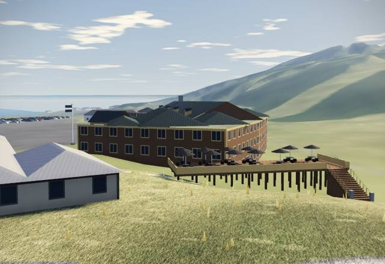
A two-storey walk-out clubhouse. The lower storey is golden limestone with stone pillars, the upper storey beige siding with white trim, and a black iron balcony runs across the course side. The roof is a weathered grey-brown shingle hip roof with louvred cupolas, plus a central projecting bay with a big arched (barrel-vault) glass dormer. A beige clock tower with a pyramid roof stands at one end, and a stamped stone patio has blue umbrellas and fire pits with Adirondack chairs.
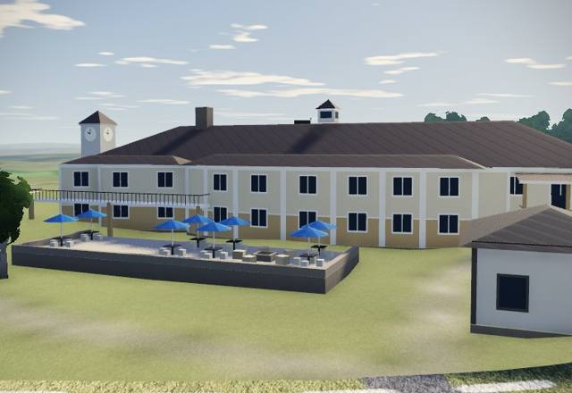
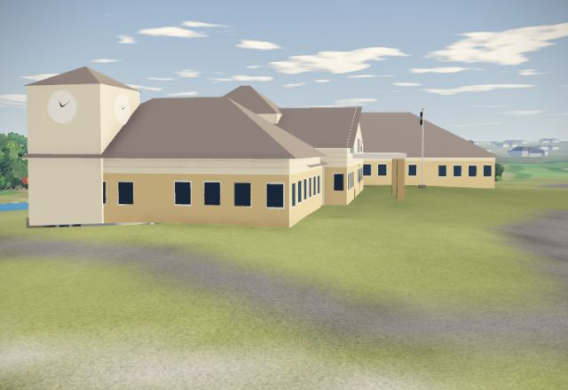
Cragun's Legacy clubhouse is a long, mostly one-storey lodge. It has light cream stucco walls over a grey fieldstone wainscot, dark-stained timber trim and a brown shingle roof with gable ends. Several grey fieldstone chimney masses stand on the roof. The course side centres on a tall timber-framed glass gable, and a low porch roof runs along a patio with white chairs and umbrellas above a boulder wall. A stucco-and-stone clock tower with a pyramid roof and a timber-posted gabled entry porch face the lot.
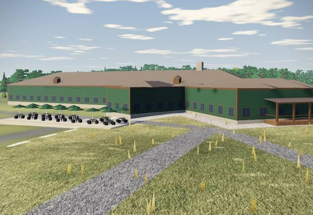
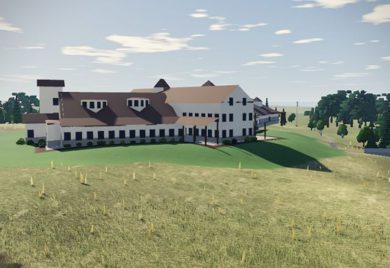
A small one-storey white clapboard clubhouse under a hipped, weathered grey cedar-shake roof. A big glazed belvedere sits on top with windows all round and its own low hip roof. A corner porch has square white columns, and a concrete-paver patio has teak tables and no umbrellas.
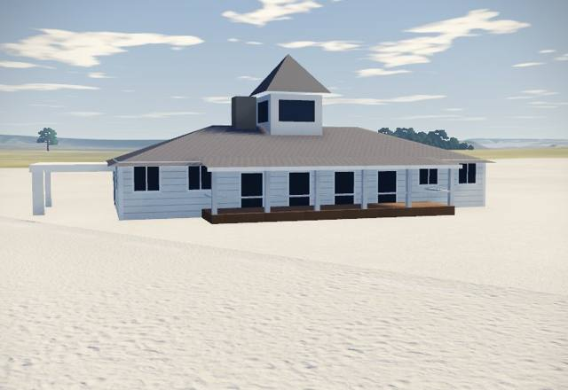
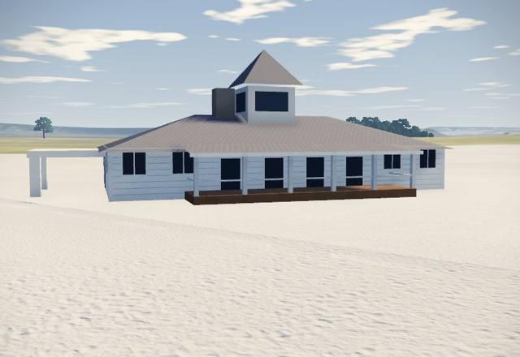
Cream stucco under a big dark green shingle roof. At one end is a stucco tower carrying a dark green octagonal lantern with arched openings and a copper-green dome. The entry side has a row of small cross gables with arched windows and a stepped flat-parapet stucco block. The course side has three larger plain stucco gables with arched windows and a patio in front.
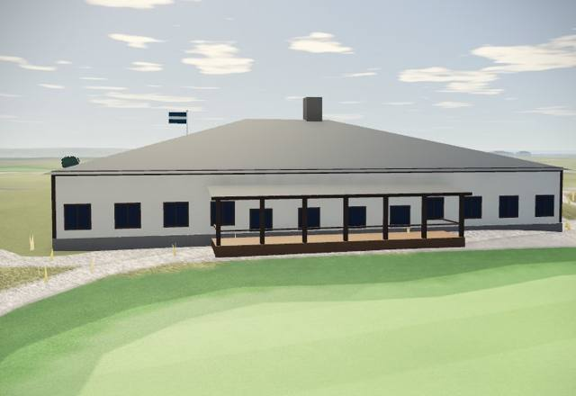
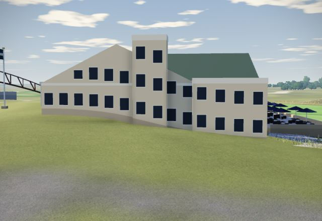
Sand Valley and Mammoth Dunes share this clubhouse. It is a long two-storey building with dark charcoal standing-seam roofs. Two tall, steep gables face the course in the middle, in pale whitewashed vertical board, with window rows and an iron balcony on the left one. Long two-storey wings in natural cedar board run either side, with deep covered porches on posts and stone chimneys. Adirondack chairs fill the lawn and there are no umbrellas.
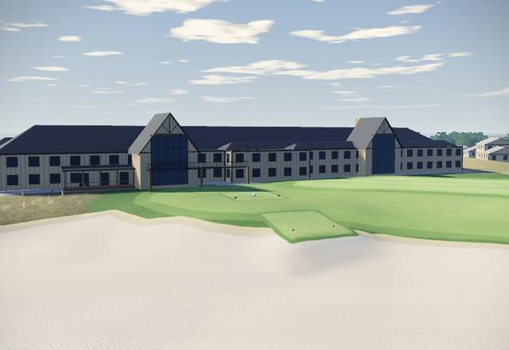
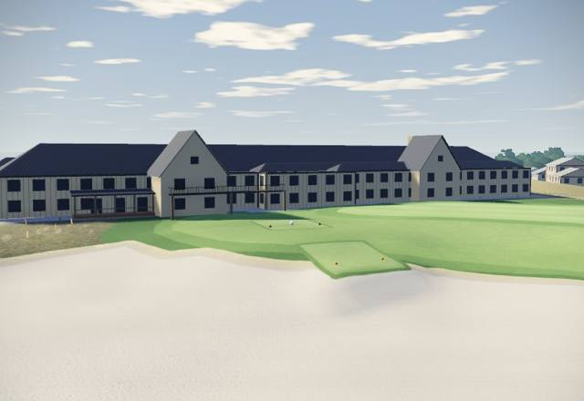
An octagonal pavilion with a two-tier sage/teal-green standing-seam metal roof and small gabled dormers. A clerestory with an octagonal lantern and finial sits on top. The walls are tan, mostly glass, and the whole building stands on a raised terrace of brown stone with a stone retaining wall and central steps.
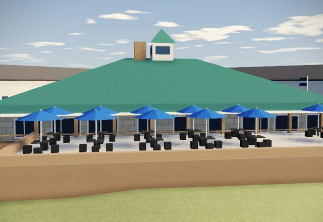
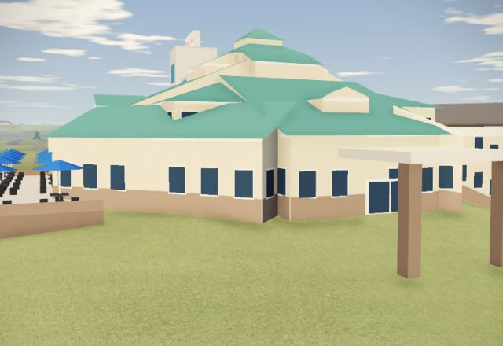
Two-level Southern clubhouse: red-brick walk-out ground storey with dark arched openings, cream lap-siding upper storey wrapped by a white-columned veranda with white railings and a sweeping double stair, grey-tan shingle roof with a white cupola and a tall brick chimney, and big front gables with half-moon fanlight windows on both the entry and course sides. A round stamped-concrete 'Back Yard' fire-pit patio with Adirondack rockers sits on the course side.
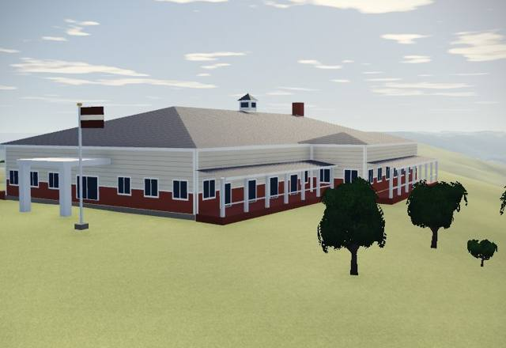
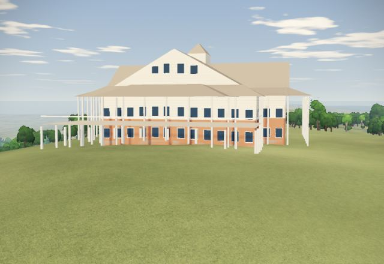
Long one-storey Southern clubhouse with a silver standing-seam metal roof, rows of gabled dormers, a central cupola and white chimneys. A white pedimented portico with a fanlight is centred on the course side, and white gable-fronted end wings project at each end. Between them the walls are muted brick with white window bays and a white frieze, with black shutters. A brick terrace with steps leads down to the lawn.
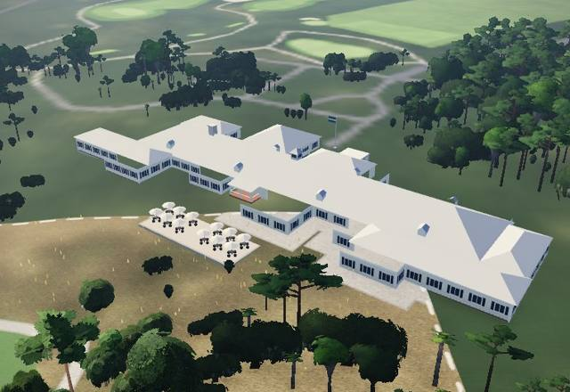
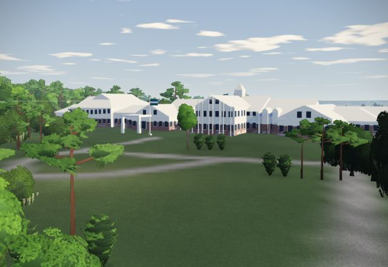
A Craftsman-style one-storey clubhouse with dark brown-grey shingle walls, cream bargeboards and window trim, and a weathered brown shingle roof with gables. It has a front gable over a deep porch, a gable dormer, and tapered square columns on fieldstone bases. It sits behind a pond with a fountain and boulder walls.
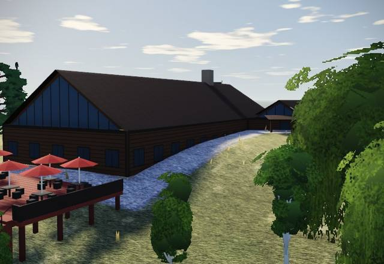
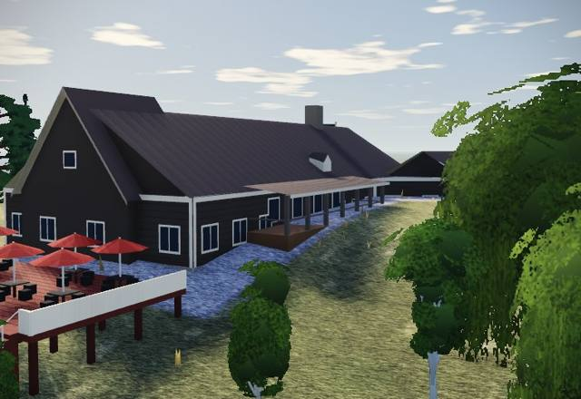
A long brown log/wood clubhouse under a green metal roof with gable ends. A gabled wing at one end has a raised screened porch on posts. White posts carry a veranda along the course-side wall, and there is a light-coloured chimney. The raised deck has a red surface, dark wood railings, a white-capped cable railing and red umbrellas.
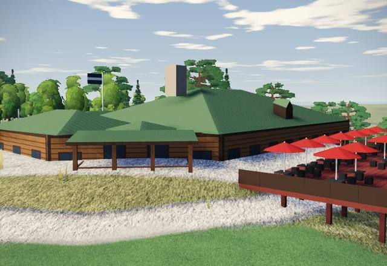
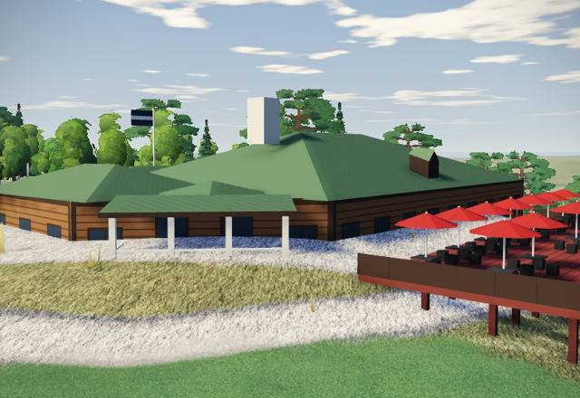
A Tudor-revival clubhouse with cream stucco and dark brown half-timbering. Steep brown-shingle gables have flared eaves, and the entry side has grey-cream ledgestone walls. On the course side, three gables rise over a raised limestone terrace with a black iron railing, steps and blue/red/pink umbrellas. The middle glass gable carries a clock, and there is a cart-storage door under the right-hand gable. The entry has a steep dark-brown gabled canopy on timber posts.
A single-storey clubhouse under one big hipped roof in dark charcoal/green-grey shingle. Walls are light greige lap siding over a grey fieldstone wainscot about a third of the wall high, with a dark brown eave band and dark-framed windows. A projecting hipped canopy over the entry rests on fieldstone piers, and there's a stone corner pier. The course side has the Wacootah patio: stamped stone-look concrete, red market umbrellas and a wooden rail over the lake.
White lap-sided two-storey walkout clubhouse with a hunter-green roof, gable ends with big glass windows and a square cupola on the ridge. The course side has a full-length second-storey wood deck on posts (white columns and pergola above, white railing) over the lower walkout level.
The golf shop is in the Renaissance Ross Bridge hotel: a 5-7 storey Scottish-baronial pile in cream limestone/stucco with fieldstone lower walls and wings, very steep slate-grey roofs broken by many steep stone-verged gables and small dormers, conical turrets and a tall square bell tower with a spire. The course side has a big paver pool terrace with teal umbrellas and a fire pit.
Large white two-storey modern clubhouse with green standing-seam hip roofs, a big square lantern cupola, walls of glass, and a raised terrace with white umbrellas over an open colonnade (stone-based piers) where carts stage.
Sand Valley and Mammoth Dunes share this clubhouse. It is a long two-storey building with dark charcoal standing-seam roofs. Two tall, steep gables face the course in the middle, in pale whitewashed vertical board, with window rows and an iron balcony on the left one. Long two-storey wings in natural cedar board run either side, with deep covered porches on posts and stone chimneys. Adirondack chairs fill the lawn and there are no umbrellas.
One-storey white lap-sided clubhouse with a sage-green roof (sampled #8c9d6a, matches the current #8a9c6e), a white cupola, two chimneys, gable-fronted end wings with half-round vents, a white-columned front porch, dark shutters and a brick walk.
A long, tall, low-pitched building with tan-orange brick end walls and a dark charcoal standing-seam metal roof stepped into a monitor with a clerestory window band. The course side between the brick ends is a full-height dark glass storefront. A separate small black board-and-batten starter hut with cedar soffits also serves Sedge Valley.
A single-storey cream clubhouse wrapped by a white-columned veranda, with a broad brown-grey shingle hip roof, a large white cupola, a white front gable on the course side and brick chimneys.
A long, low cream stucco (EIFS) clubhouse with broad, low roofs in dark charcoal standing-seam metal. It sits on a red-brown brick base about 1 yd high, with brick piers on the porches. A taller two-storey stucco gable bay with plain verges stands in the centre, and covered porches run along the walls. The course side has a herringbone brick-paver patio with a brick fire feature.
Low, sprawling shingle-style clubhouse: grey-beige shake siding, white trim, weathered grey shingle hip roofs with several small white-trimmed gable dormers. Long row of windows and a white-railed porch facing the course, a white hipped porte-cochere at the entry, and a paver patio with navy and red umbrellas.
White plantation-style clubhouse with a bright blue standing-seam metal roof, three arched gabled dormers, a steep main gable end and tall white chimneys. A raised screened wraparound veranda has white posts and white stairs down to the course.
Low white-stucco pueblo-revival building with a flat parapet roof, dark-brown wood trim and posts, striped canvas awnings, and a big flagstone patio facing the 18th green covered in red umbrellas.
A one-storey clubhouse under a broad dark-green shingle hip roof. It has two arched eyebrow dormers, a wood-clad chimney box at the peak and a red-brown fascia. The walls are mostly big windows in pale olive-tan siding. Round fieldstone pillars hold up a covered walk around the building, and it sits on a raised, boulder-walled terrace with red stamped-brick pavers and black umbrellas.
A hip-roofed clubhouse in light grey siding with a charcoal shingle roof, white trim, small gables over the windows and a white-columned gabled entry portico. It is a walkout: two storeys on the course side, with a glazed upper floor, a railed deck and blue umbrellas.
A long farm-style clubhouse with red-brown stained board walls and a weathered grey cedar-shake gable roof. A light metal-capped chimney stands at one end. A long screened porch with a low silver metal roof on a masonry base runs along the course side. Fieldstone walls, lawn picnic areas and a fire pit ring with Adirondack chairs sit beside it, with a red-brick barn building behind.
One-storey clubhouse in warm grey vertical siding with steep gable-fronted wings, a red-brick centre section and base, a dark grey shingle roof, a small cupola and a white-columned, white-railed front porch.